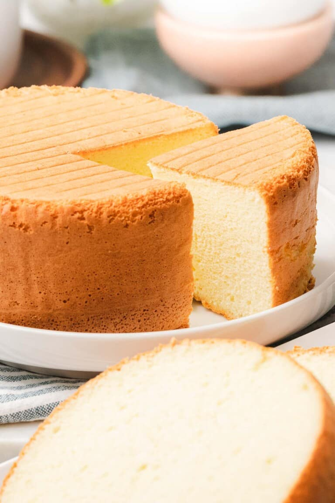

Home
Basic Sponge Cake

DESCRIPTION
Sponge cake is a light and airy cake that's that's leavened with beaten eggs instead of yeast. Sometimes baking powder is added for more volume. The beaten eggs act as a rising agent, giving the cake a fluffy, light texture.
This easy sponge cake is soft, fluffy, and light as air! It's a simple recipe for basic sponge cake made with ingredients including cake flour, beaten eggs, and sugar for an easy to make, moist sponge cake!
INGREDIENTS
DRY INGREDIENTS
- 1 cup cake flour
- ⅞ cup white sugar - divided
- ½ teaspoon baking powder
- ¼ teaspoon salt
- ½ teaspoon cream of tartar - (optional)
WET INGREDIENTS
- 6 eggs - whites and yolks separated
- ⅓ cup vegetable oil
- 2 Tablespoons water
- 2 teaspoons honey
- ½ teaspoon vanilla extract
STEPS
- Preheat oven to 350° F. Using a stand mixer or hand mixer, beat egg whites with the cream of tartar (if using) on high until it becomes foamy. Next, add ⅓ of the amount of sugar and beat on high until firm peaks form. When lifting the whisk, look for the tip to drop slightly. Set aside.
- Whisk the egg yolk mixture. In a large bowl, add the egg yolks, the remaining ⅔ sugar, salt, water, honey, and vanilla. Beat on high until fluffy, pale yellow ribbons form when lifting the whisk. The ribbon should remain for 3 to 4 seconds. Add half the egg whites to the egg yolk mixture and fold gently.
- Make the batter Sift the flour and baking powder into the egg yolk mixture in three parts, gently folding after each time. Next add the vegetable oil. Tip: To help incorporate the oil better, mix a few spoonfuls of the batter with the oil before adding.
- Fold in the remaining egg whites Add the remaining ½ of the egg whites to the batter and fold gently until well combined, taking care not to deflate the batter.
- Bake the cakes. Line two 6 inch cake pans with parchment paper along the sides and bottom. Pour the batter and bang the pan twice to remove large air bubbles. Bake until a toothpick inserted in the center comes out clean and the crust is golden brown with a raised center, about 27 to 30 minutes
- Allow the cake to cool. Remove all the parchment paper and allow to cool completely on a cooling rack before slicing. Use a cake leveler for even slices. Serve with whipped cream and fruit or make a layered cake.
- Enjoy!